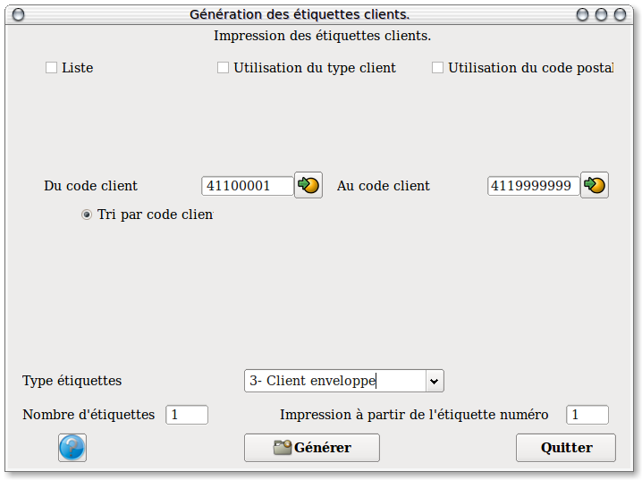

~ Comptabilité et Facturation Laurux ~

~ Comptabilité et Facturation Laurux ~ |
|
|
|

Ce programme vous permet de
préparer les étiquettes clients soit en saisissant manuellement une
liste de client soit en générant automatiquement une liste de
clients, une
liste de types clients ou une liste de codes postaux.
Une fois définie la liste des clients à
imprimer, on va pouvoir choisir l'ordre de tri en cochant le bouton
souhaité, soit dans l'ordre des codes clients, soit dans l'ordre des
types clients
ou dans celui des codes postaux.
Si on ne souhaite pas travailler avec les types clients ou les codes
postaux, il suffit de décocher les boutons ad hoc.
On peut aussi définir le nombre
d'étiquettes pour chaque client et enfin, on peut également fournir un
numéro d'ordre pour le début de l'impression, ce qui est utile
lorsqu'une planche d'étiquettes a été en partie déjà utilisée.
----------------------------------------------------------------------------------------------------------------------